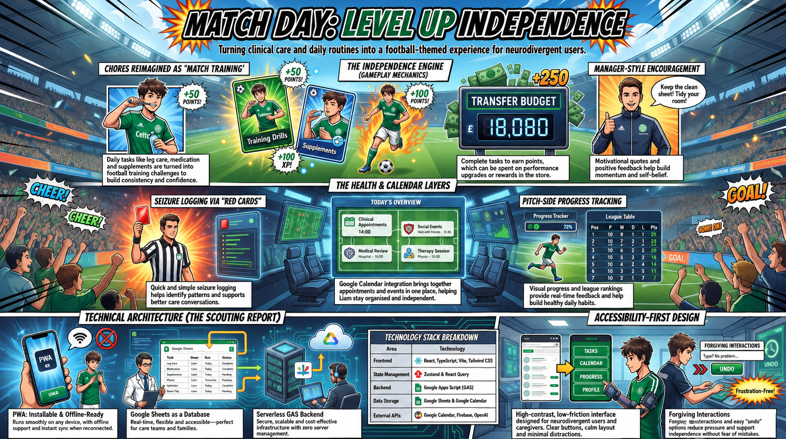
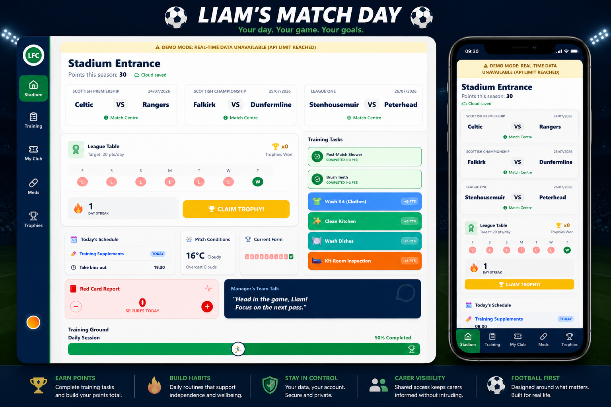
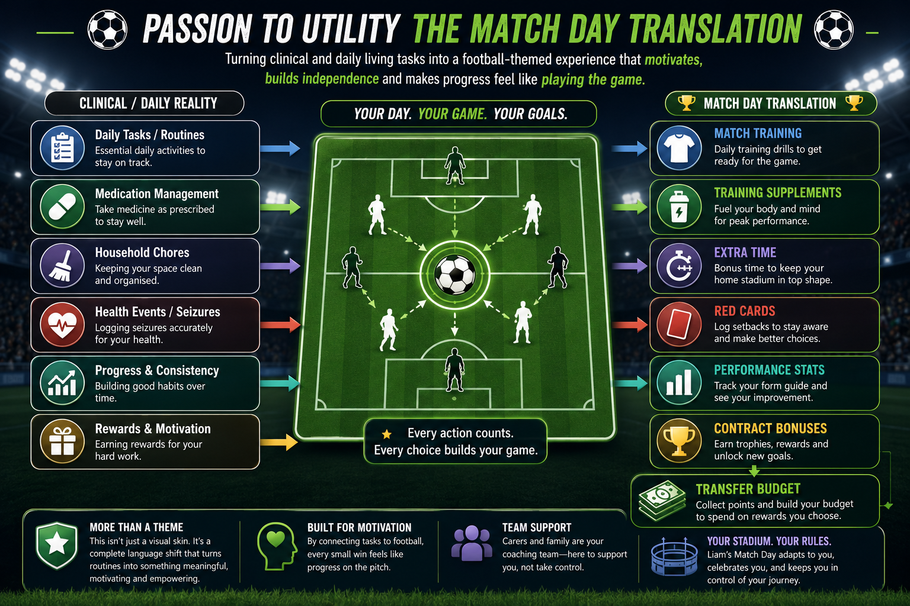
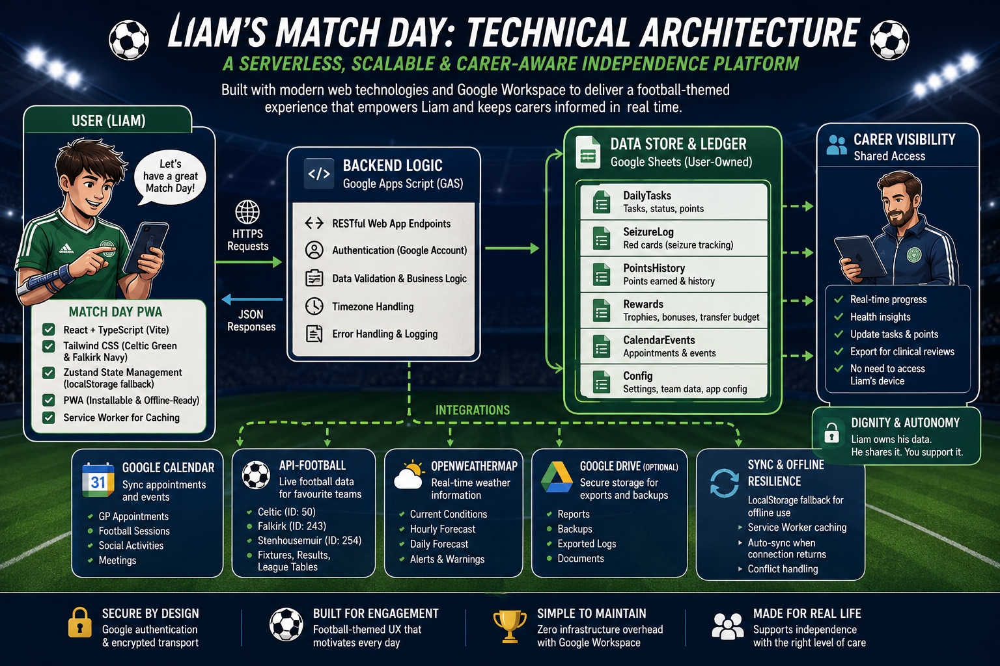
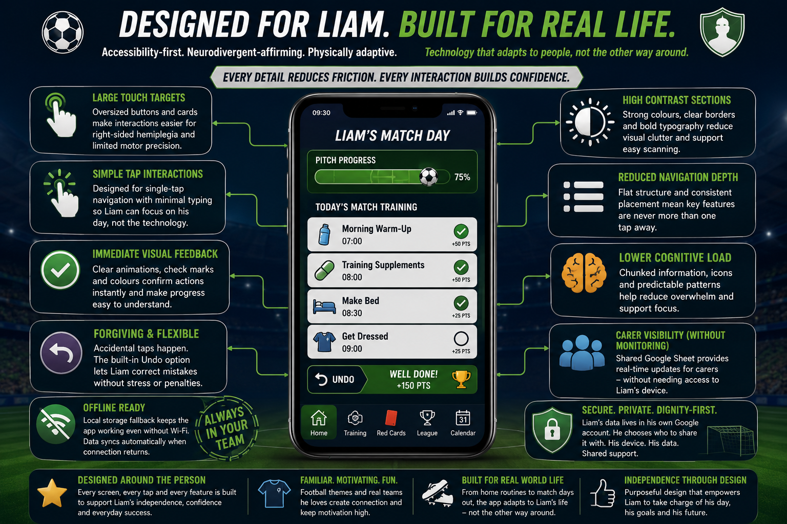
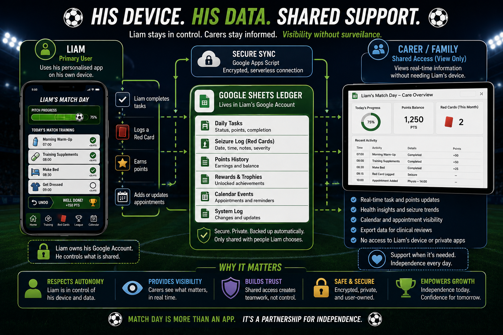

1
Independence Engine
Large football-themed cards organise hygiene, routines and household tasks by time of day, with simple taps, instant points and clear feedback.

A bespoke football-first Progressive Web App that transforms daily routines, health tracking and supported living into an age-appropriate experience built around motivation, dignity and real life.
Liam's Match Day was designed for a young adult navigating autism, epilepsy, learning disabilities and right-sided hemiplegia. It replaces the cold visual language of a care plan with an experience grounded in football, familiarity and personal identity.

The central problem was not a lack of available reminders or checklists. It was the absence of a system Liam would genuinely want to open every day.
Standard independence tools often focus on compliance. They ask whether medication was taken, whether a room was tidied, or whether an appointment was attended. Liam's Match Day keeps those practical requirements, but translates them into the language of football so the experience feels personal rather than clinical.
Daily routines become Match Training. Medication becomes Training Supplements. Chores move into Extra Time. Seizures are recorded as Red Cards. Completed tasks build Performance Stats and a Transfer Budget that can unlock trophies and real-world rewards.
The platform starts with the question: what would make Liam want to use this? It does not begin with the convenience of a service provider.
Football is not a decorative layer placed over a generic task manager. It is the organising language of the product. The terminology, progress model, rewards, visual feedback and motivational prompts all connect essential routines to something Liam already values.
This approach can be described as passion-to-utility translation: mapping practical, educational or health-related requirements into the language and reward structures of a person's established interest.

The product model was built around the user, rather than fitting the user into a pre-existing product model.
Each layer supports a different part of Liam's day while keeping the interaction model familiar and consistent.
Large football-themed cards organise hygiene, routines and household tasks by time of day, with simple taps, instant points and clear feedback.
Red Card logging provides a quick, low-friction way to record seizure counts and preserve a reliable history for future clinical conversations.
Live fixtures, points, trophies, league form and manager-style Team Talk messages keep the platform connected to Liam's actual football interests.
Google Calendar events surface appointments, football sessions, social activities and college commitments inside the same daily interface.
Live conditions support practical self-care decisions such as what to wear, what to take and how to prepare for activities outside the home.
Consistency is reflected through form, streaks, trophies and a Transfer Budget that links daily effort with meaningful rewards.
The architecture deliberately favours low operational overhead, user-owned data and familiar tools over unnecessary infrastructure.

Google Sheets was selected because it gives family members and carers a familiar, transparent ledger without requiring a separate administrative portal. It is not simply a cost-saving shortcut. It is an architectural decision shaped around the people who need to maintain the system.
Google Apps Script handles the data operations between the Progressive Web App and the underlying sheets, while Google Calendar supplies appointments and scheduled events.
| Component | Purpose |
|---|---|
| React, TypeScript and Vite | Fast, component-based user interface and installable PWA. |
| Zustand and local storage | Local state and resilience during temporary connectivity loss. |
| Google Apps Script | Serverless data operations, validation and integrations. |
| Google Sheets | User-owned operational ledger for tasks, health, points and settings. |
| Google Calendar | Appointments, sessions, college events and social activities. |
| External APIs | Football fixtures and live weather information. |

Accessibility is treated as an interaction and architecture problem, not a checklist added after the interface was finished. The design responds directly to Liam's cognitive profile and right-sided hemiplegia.
A forgiving interface reduces the cost of mistakes. It supports confidence instead of punishing imperfect interaction.
The system gives carers the information they need without requiring them to take over Liam's device or digital space.

Liam remains the primary actor in his own system. His account, his device, his data and his routines remain centred throughout the architecture.
Carers can review task completion, points, appointments and health trends from their own devices through shared access. They do not need to borrow Liam's phone, look over his shoulder or become the sole keeper of his information.
This creates a practical balance between independence and support. The architecture preserves adult autonomy while keeping vital information available when it is genuinely needed.
Research into assistive technology found an active market of visual planners, caregiver-supported tools and gamified habit trackers, but few products combine these approaches through deeply personalised, passion-led design.
Specialist products can provide strong visual structure and caregiver support, but often retain a formal or service-led interaction model.
A bespoke system combining visual scheduling, health tracking, caregiver visibility, live sports data and a fully personalised football metaphor.
Products such as fantasy trackers or virtual pets make routines more engaging, but the theme and interaction world are defined by the product.
Football is the implementation, not the limit of the idea. The same architecture could be built around music, gaming, trains, animals, art, motorsport or any other meaningful interest.
The reusable method is to identify the world that already matters to the person, then translate routines, progress, feedback and support into that world without compromising dignity or safety.
Liam's Match Day demonstrates how personalised architecture can make support tools feel less like work and more like something worth returning to.
When technology is designed around what a person loves rather than what they lack, the relationship with the tool can change completely.